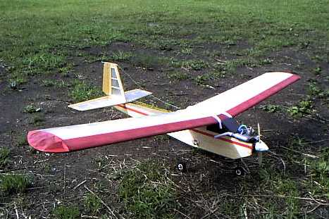

飛行日誌
プレイリー ムサシノ模型飛行機研究所

注） 主翼はスカイカンガルーのものを使用中
| 全長 | 810mm |
| 全幅 | 1195mm |
| 全備重量 | 860g （カタログ値：950 ～ 700g） |
| 主翼面積 | 23.8 dm2 |
| 翼面荷重 | 36.1g/dm2 （GP仕様カタログ値：39.9 ～ 29.4g/dm2） |
| 主翼翼型 | クラークＹ類似 |
| エンジン | ENYA 09BB-TV |
| 燃料タンク | 80cc |
| プロペラ | 8×4 |
| サ－ボ | Futaba FP-S143 (19g)×3、 エレベーター・ラダー・スロットル |
| 受信機 | Futaba R115R |
| バッテリ－ | 4N 4.8V Nicd (Panasonic製 家庭電話機用を改造) |
購入のきっかけ
子どもの頃から模型飛行機が好きだった。しかし、昭和40年代の田舎の少年には、ラジコンはまだまだ高嶺の花であり、模型店自体近隣には無く、雑誌で見るのが関の山であった。手にはいるのは竹ひごをろうそくであぶって曲げて作るライトプレーンか、子どもの科学の付録の紙飛行機だけであった。
そんなおり、豊橋に住んでいた伯父がTester社製のアルバトロスというＵコン完成機のキットを買ってきてくれた。雲に登るような気持ちでキットをいじくり回したのだが、まわりには誰もラジコンやＵコンをやっている人はおらず、自力でエンジン始動に挑戦したものの、苦労したあげく、ビビビビィィと一瞬青い煙を吐いただけで、COXの049エンジンはそれっきり沈黙してしまった。プラグヒートのための単一乾電池を使い果たし、結局そのアルバトロスは一度も空を飛ばないまま、箪笥の上で埃をかぶってしまった。
時は流れて、15年あまりが過ぎた。サラリーマンとなり、独身でもあるので釣り具の他にラジコン機材を揃えるくらいのお金は自由になる身分となった。少年時代の遙かなる憧れ、あるいはほろ苦い想い出であるラジコン飛行機に手が届くようになったのだ。そこで、手軽な 2ch 操縦の京商製のグライダー Melody1500 や同じく京商製のモーターグライダーなどを買って飛ばし始めたものの、どうもパッとしない。もちろん腕のせいもあったのだろうが。
そうこうしているうちに、書店で「軽ラジコン機入門」という本が目に付いた。読んでみると、実に説得力のある内容で、ゆっくり飛ぶ飛行機の有利さが書いてあった。さっそく模型店に行き、プレイリーのキット、エンジンなど必要な付属品を買い込み、アパートの片隅の机の上に製図板を置いて作り始めた。かれこれひと月くらいかかって完成させたものの、あいかわらずの独学と、飛行に適した場所が無かったことなどから、近くの公園の広場で離陸→数秒間の滞空後、傾いて右主翼から着地したプレイリーは大穴を主翼前縁に開けてしまい、哀れにも押入の隅にしまい込まれたのであった。
再び時は流れて。
ニュージーランドから帰り、暇があるのをいいことに、実家の箪笥の上で埃をかぶっていたプレイリーを取り出し、キャブレターに燃料が固着していて動作不能になったエンジンを換装し、幸運にも親切な諸先輩のいる河川敷の飛行クラブにも巡り会えて、ラジコン飛行機を自由自在に飛ばすという少年時代の夢が、実現することとなった。
フライト・インプレッション
河川敷の飛行クラブでベテランの人に安全高度まで上げてもらった。ラジコン飛行機って本当に飛ぶんだなぁというのが正直な感想。（笑） それからまず上空での旋回を教えてもらう。ラダーを打ってそのままにしていたり、大きく打ちすぎると機首がどんどん下向きになるのがコワイが、エレベーターを少し引いて、落ちた高度を取り戻す、あるいは、高度が落ちないようにラダーとエレベーターを連携して使うことを教えてもらうと、だいぶ怖くなくなった。
まだ、安全な上空でぐるぐると旋回することしかできないが、とても素直で安定の良い機体だと思う。動揺してスティックから指が離れても安定して飛んでいる。（笑） 現在は、徐々に高度を落として、低空での旋回に慣れ親しみ、滑走路への着陸進入を練習し始める段階。 先週末、初めて離陸に挑戦した。滑走路正面からの微風という、恵まれたコンディションの中、１回目は左にそれてコースアウト→エンストとなったものの、２回目は綺麗に滑走し、じわっとエレベーターをアップすると、なめらかに離陸して上昇を始めた。しかし、右主翼下面の超軽量ポリエステルフィルムが剥がれ落ちたのに気づいて、慌ててベテランのＯさんに降ろしてもらう。これに懲りて、主翼・尾翼のフィルムをオラライトで張り替えることにした。
Wingtips 目次へ
サイトマップ
ホームへ
お問い合わせ